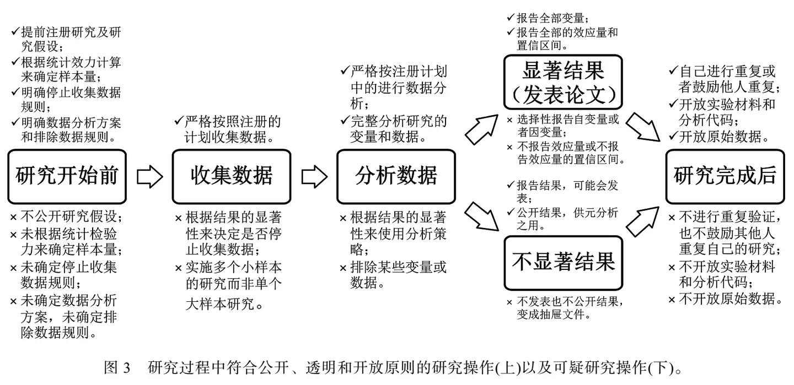
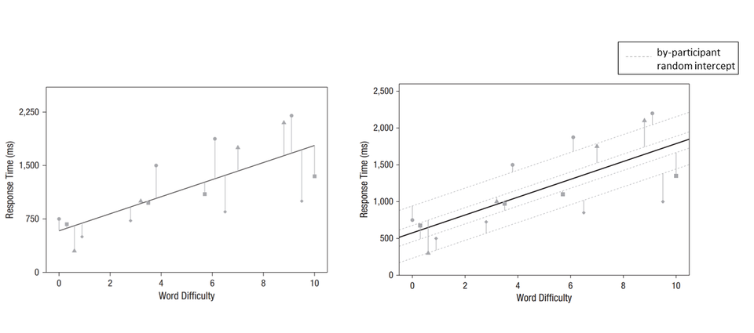
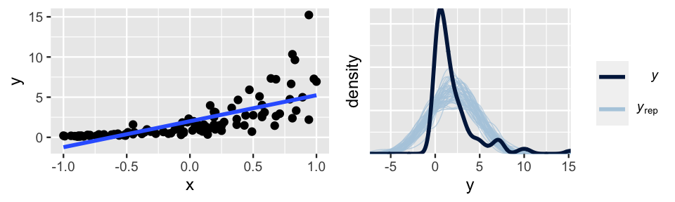
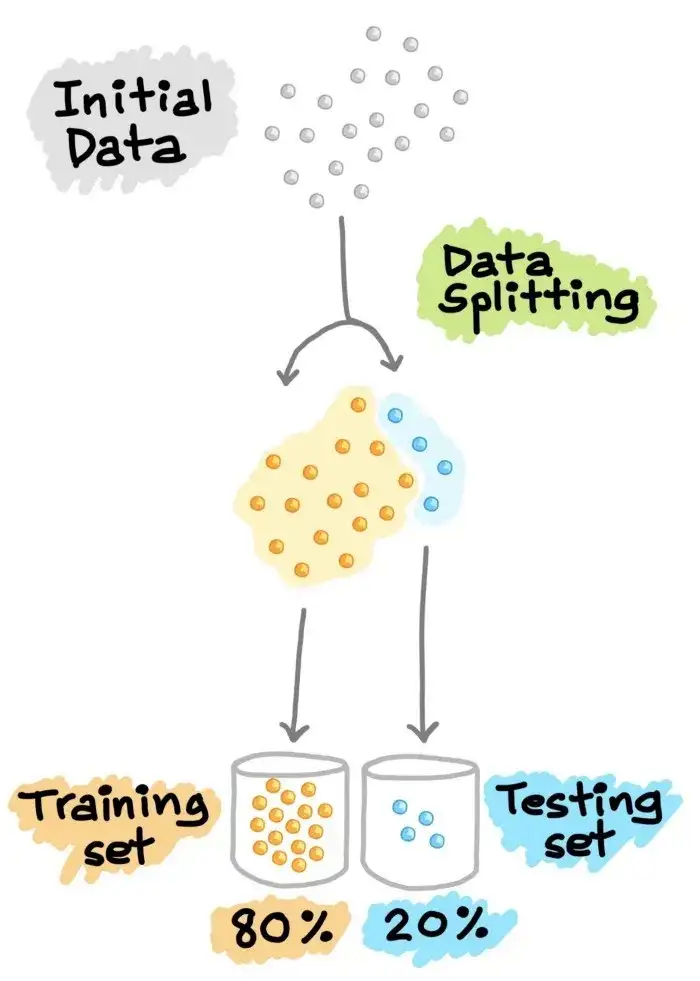
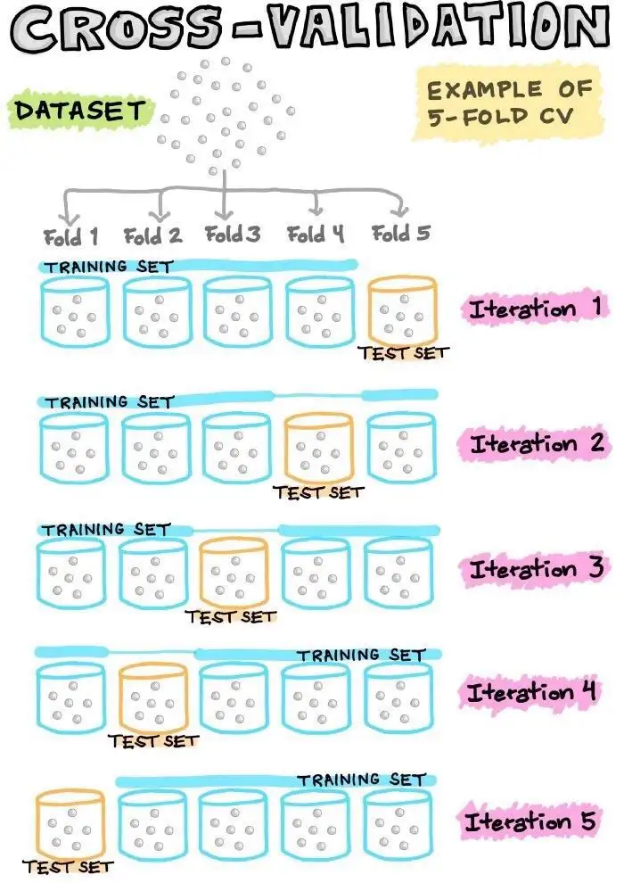
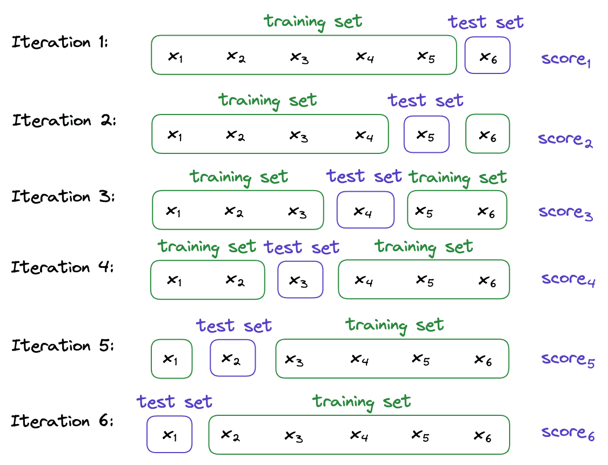
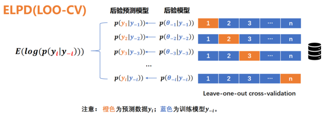
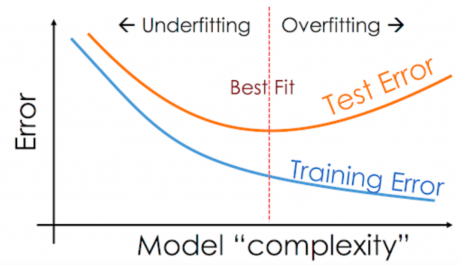
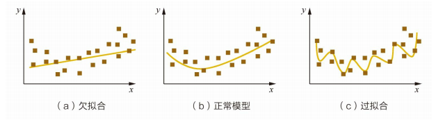

高级心理统计 · 第 11 讲
Evaluating Bayesian Regression Models · 贝叶斯回归模型的评估与比较
胡传鹏 (Dr. Hu Chuan-Peng)
南京师范大学心理学院 · School of Psychology, Nanjing Normal University
学习目标
用真实实验的数据，对照贝叶斯回归和普通最小二乘回归（OLS）的参数估计。
区分研究设计的公正性、模型假设的适切性和样本外预测表现。
计算绝对误差的中位数（MedAE）、ELPD-LOO 和 DIC，并说明它们各自回答的问题。
Part1：回顾自我匹配实验
第 10 讲用 RStan 建立了三个线性回归模型。对于同一批自我匹配实验数据，贝叶斯回归与传统 OLS 会得到一致的参数估计吗？哪一个模型对新数据的预测最好？
三个候选模型
反应变量是各被试在相应条件下的平均反应时（RT，秒）。
模型 1
RT_sec ~ Label标签（自我、朋友、陌生人）
模型 2
RT_sec ~ Label + Matching标签与匹配状态的主效应
模型 3
RT_sec ~ Label * Matching两个主效应及其交互作用
汇总实验试次
每个被试在每种标签与匹配状态的组合下贡献一个平均 RT。同一被试的多个条件均值仍可能相关。
Code
<- utils:: read.csv ("data/Kolvoort_2020_HBM_Exp1_Clean.csv" )<- rt_trials %>% :: group_by (Subject, Label, Matching) %>% :: summarise (RT_sec = mean (RT_sec), .groups = "drop" ) %>% :: mutate (Label = factor (Label, levels = 1 : 3 , labels = c ("Self" , "Friend" , "Stranger" )),Matching = factor (Matching, levels = c ("Matching" , "Nonmatching" )):: head (rt, 3 )
# A tibble: 3 × 4
Subject Label Matching RT_sec
<int> <fct> <fct> <dbl>
1 201 Self Matching 0.711
2 201 Self Nonmatching 0.740
3 201 Friend Matching 0.789
从模型公式到设计矩阵
Self 是三个模型的标签基线。模型 2 和 3 以 Matching 为匹配状态基线，截距对应自我标签且匹配的条件。LabelFriend 与 LabelStranger 分别编码相对于自我标签的差异。模型 3 的交互项由相应的标签和匹配哑变量相乘得到。
Code
<- list (model1 = RT_sec ~ Label,model2 = RT_sec ~ Label + Matching,model3 = RT_sec ~ Label * Matching<- list (Label = "contr.treatment" , Matching = "contr.treatment" )<- lapply (rt_formulas, function (formula) {<- intersect (names (contrast_codes), all.vars (formula)):: model.matrix (formula, data = rt, contrasts.arg = contrast_codes[factors]):: head (rt_designs$ model3, 3 )
(Intercept) LabelFriend LabelStranger MatchingNonmatching
1 1 0 0 0
2 1 0 0 1
3 1 1 0 0
LabelFriend:MatchingNonmatching LabelStranger:MatchingNonmatching
1 0 0
2 0 0
3 0 0
查看原始试次与对比编码
检查汇总前的标签、匹配状态与反应时。对比矩阵说明每列表示的条件差异。
Code
:: head (rt_trials[c ("Subject" , "Label" , "Matching" , "RT_ms" , "RT_sec" )])
Subject Label Matching RT_ms RT_sec
1 201 2 Matching 753 0.753
2 201 2 Matching 818 0.818
3 201 3 Matching 917 0.917
4 201 2 Matching 717 0.717
5 201 2 Matching 988 0.988
6 201 2 Matching 950 0.950
Code
:: contr.treatment (levels (rt$ Label))
Friend Stranger
Self 0 0
Friend 1 0
Stranger 0 1
Code
:: contr.treatment (levels (rt$ Matching))
Nonmatching
Matching 0
Nonmatching 1
Stan 中的高斯回归
三个模型共用一个 Stan 程序。设计矩阵 \(X\) 决定每个模型有哪些预测因子。
\[
Y_i \mid \boldsymbol{\beta}, \sigma
\sim \mathcal{N}\bigl((X\boldsymbol{\beta})_i, \sigma^2\bigr)
\]
y_rep 保存每次后验抽样生成的反应时，用于计算 MedAE。log_lik 保存每次抽样下每条观测的对数似然，用于 PSIS-LOO 和 DIC。
高斯回归的 Stan 程序
Code
<- " data { int<lower=1> N; int<lower=1> K; matrix[N, K] X; vector[N] y; vector[K] prior_mean; vector<lower=0>[K] prior_sd; real<lower=0> sigma_rate; } parameters { vector[K] beta; real<lower=0> sigma; } model { for (k in 1:K) { beta[k] ~ normal(prior_mean[k], prior_sd[k]); } sigma ~ exponential(sigma_rate); for (i in 1:N) { y[i] ~ normal(X[i] * beta, sigma); } } generated quantities { vector[N] y_rep; vector[N] log_lik; for (i in 1:N) { real mu_i = X[i] * beta; y_rep[i] = normal_rng(mu_i, sigma); log_lik[i] = normal_lpdf(y[i] | mu_i, sigma); } } "
展开三个 Stan 模型
令 \(F_i\) 、\(S_i\) 分别表示朋友和陌生人条件，\(M_i\) 表示不匹配条件。将 \(X\boldsymbol{\beta}\) 展开后，三个模型的生成均值如下。
1
\(\beta_0 + \beta_1 F_i + \beta_2 S_i\)
2
\(\beta_0 + \beta_1 F_i + \beta_2 S_i + \beta_3 M_i\)
3
\(\beta_0 + \beta_1 F_i + \beta_2 S_i + \beta_3 M_i + \beta_4 F_iM_i + \beta_5 S_iM_i\)
每个模型都把对应的均值用于似然、后验预测和逐点对数似然。
为三个模型指定先验
沿用前一讲示例的先验。正态先验用均值和标准差指定，指数先验用率参数指定。
截距 \(\beta_0\)
均值 5、标准差 2 的正态分布
各回归系数 \(\beta_j\) ，\(j > 0\)
均值 0、标准差 1 的正态分布
残差标准差 \(\sigma\)
率为 0.3 的指数分布
思考 ：反应时以秒为单位，这些先验允许哪些典型反应时？可以用先验预测检验来回答。
Code
<- lapply (rt_designs, function (X) {list (N = nrow (X), K = ncol (X), X = X, y = rt$ RT_sec,prior_mean = c (5 , rep (0 , ncol (X) - 1 )),prior_sd = c (2 , rep (1 , ncol (X) - 1 )), sigma_rate = 0.3 )
拟合三个候选模型
每个模型使用 4 条链，每条链迭代 3,000 次，前 1,000 次用于预热。
Code
<- rstan:: stan_model (model_code = gaussian_stan)<- lapply (rt_stan_data, function (model_data) {:: sampling (rt_stan_model, data = model_data, chains = 4 ,iter = 3000 , warmup = 1000 , seed = 84735 , refresh = 0 )
用 OLS 拟合同一个模型
两种分析使用同一批观测和同样的因素编码，因此对应系数可以逐项比较。
Code
<- stats:: lm (rt_formulas$ model3, data = rt, contrasts = contrast_codes)stopifnot (identical (stats:: model.matrix (rt_ols), rt_designs$ model3))<- stats:: coef (summary (rt_ols))<- stats:: confint (rt_ols, level = 0.95 )
用显式设计矩阵复核 OLS
设计矩阵已包含截距，公式中用 -1 去掉额外截距。用同一编码可复核按因素公式得到的回归系数。Python 的 statsmodels 也可以拟合同样的 OLS 模型。
Code
<- rt_designs$ model3<- stats:: lm (rt$ RT_sec ~ X - 1 )stopifnot (isTRUE (all.equal (unname (stats:: coef (ols_matrix)),unname (stats:: coef (rt_ols)))))
贝叶斯回归与 OLS 的参数比较
贝叶斯回归报告后验均值、后验标准差与 95% 等尾可信区间。OLS 报告点估计、标准误与 95% 置信区间。
截距
0.678
0.024
[0.631, 0.725]
0.678
0.024
[0.631, 0.725]
朋友
0.079
0.034
[0.011, 0.147]
0.079
0.034
[0.013, 0.146]
陌生人
0.089
0.034
[0.022, 0.158]
0.089
0.034
[0.023, 0.156]
不匹配
0.050
0.034
[-0.016, 0.117]
0.050
0.034
[-0.016, 0.116]
朋友 × 不匹配
-0.030
0.048
[-0.124, 0.066]
-0.030
0.048
[-0.124, 0.063]
陌生人 × 不匹配
-0.057
0.048
[-0.154, 0.035]
-0.057
0.048
[-0.151, 0.037]
参数不确定性与模型拟合
贝叶斯模型的 \(\sigma\) 后验均值为 0.133 秒，后验标准差为 0.007 秒，95% 可信区间为 [0.120, 0.148] 秒。
OLS 的 \(R^2\) 为 0.062，调整后 \(R^2\) 为 0.036。整体检验的 \(F\) 值为 2.36，\(p\) 值为 0.0418。
OLS 的对数似然、AIC 和 BIC 分别为 115.01、-216.03 和 -193.45。
从这些指标能看出在现有样本中的拟合如何。下一步要明确，我们希望模型预测怎样的新观测。
比较参数与不确定性
同一设计矩阵下，两种回归的点估计可以很接近。
贝叶斯回归给出后验分布，支持计算后验均值、后验标准差、等尾可信区间及最高密度区间（HDI）。
OLS 报告点估计、标准误、置信区间和 \(p\) 值，也常报告 \(R^2\) 、调整后 \(R^2\) 、\(F\) 、对数似然、AIC 与 BIC。
如需比较回归参数的假设，可了解 bayestestR::bayesfactor_parameters()，并明确备择假设所用的先验。
从模型拟合到模型比较
这一讲要问，增加预测因子或交互项，能否改善对所关心的新数据的预测？
三个评估问题
研究过程公正吗？ 招募、测量、分析及结果使用是否考虑了相关人群？模型假设影响什么？ 观测依赖性、非线性和异方差会改变哪些解释？模型能预测哪些新观测？ 增加匹配状态或交互项，是否改善了所关心的样本外预测？
为什么要进行模型比较？
模型评估可以针对单一模型，也可以比较多个模型的公正性、可信性与有效性。比较目标随研究问题变化。
模型 2 与模型 1
已考虑标签时，匹配状态是否能改善预测？
模型 3 与模型 2
标签效应是否随匹配状态变化？纳入交互项后，预测表现如何？
模型公正吗？
公正性涉及研究过程和结果使用是否符合社会、道德与伦理预期。若特定群体在样本中代表性不足，研究结论的适用范围会受到限制。
原稿指出，自我匹配数据来自线下认知实验，参与者签署知情同意书并获得相应报酬，数据做了匿名化处理。讨论 ：若只招募大学生，基于这些数据得出的推断可以推广到哪些人群？
招募、知情同意与样本代表性
自我匹配范式的反应时数据来自认知实验。知情同意、参与报酬和匿名化分别涉及参与者权益与隐私。
如果样本只来自大学生，结果能否推广到其他年龄、教育和文化背景的人群？
样本来源和实验条件应与研究希望解释的人群和情境相对应。
研究目的与结果使用
谁发起、资助并实施研究？利益冲突可能影响招募、测量与报告。
参与者获知的研究目的会不会改变他们在实验中的行为？
自我匹配模型可帮助解释个体如何处理与自我相关的信息。若用于个体判断，仍需验证它在目标情境中的表现。
研究目的与利益冲突
例如，开发缓解压力药物的厂商资助研究时，研究者可能面临选择有利于预期结果的被试、提前透露实验目的等影响。
隐含假设怎样影响心理学研究
假设心理现象跨文化普遍
忽略文化背景与测量差异
扩大招募范围，检验不同群体中的效应与测量
偏重特定社会背景中的个体样本
样本选择限制理论的适用范围
纳入多种社会背景，比较替代解释
Bettache (2024) 与 Ghai 等人 (2024) 分别讨论了心理学研究中的隐含取向和大团队研究的可推广性。Bettache · Ghai 等人
分析选择与可重复性
收集多个因变量，只报告出现目标相关的一个，可能夸大证据。
反复增加变量或尝试简单效应分析，会增加发现偶然交互作用的机会。
报告分析选择及其依据，区分预先提出的假设与根据数据形成的探索性解释。
延伸阅读：胡传鹏等人（2016），心理学研究中的可重复性问题 。
公正性与心理学研究的可重复性
讨论选择性报告、p -hacking 和 HARKing 如何影响证据。胡传鹏等人（2016）

模型可能有多错？
All models are wrong, but some are useful.
统计模型简化了现实。以前一讲的标签与反应时模型为例，哪些简化会影响模型对心理现象的解释与预测？
高斯线性回归的三项假设
\[
Y_i \mid \beta_0, \beta_1, \sigma
\stackrel{\mathrm{ind}}{\sim} \mathcal{N}(\mu_i, \sigma^2),
\qquad \mu_i = \beta_0 + \beta_1 X_i
\]
条件独立 ：给定预测因子与模型参数，观测之间独立。线性关系 ：条件均值 \(\mu_i\) 随 \(X_i\) 线性变化。方差齐性 ：不同 \(X_i\) 水平下的条件方差均为 \(\sigma^2\) 。
同一被试的反应可能相关
一些被试整体反应更快，一些刺激也可能普遍诱发更快的反应。
忽略同一被试或同一刺激内的依赖，可能低估估计的不确定性。
层级模型可以用被试随机截距表达不同被试的基线，并在研究设计允许时考虑刺激差异。
随机截距怎样表达被试差异

实线表示群体趋势。加入随机截距后，模型允许不同被试有不同的基线 RT。Brown (2021)
怎样读随机截距示意图
左图用一条总体关系描述反应时，灰色误差条显示观测的变异。
右图的虚线显示被试各自的基线，实线显示群体平均趋势。
忽略被试内或刺激内的关联可能低估标准误，也可能掩盖个体差异。层级模型可同时表达总体趋势和被试间差异。
非线性与异方差

左图中，均值随预测变量呈非线性变化，反应的变异也随预测变量增加。右图用后验预测检验比较模型生成的数据与观测数据。
如何修改模型
观测依赖 ：根据被试、刺激或站点的分组结构建立层级模型。反应分布不适合正态模型 ：根据反应变量的测量尺度考虑二项、泊松或负二项回归。均值趋势或残差变异不同 ：考虑变换 \(X\) 或 \(Y\) ，或者直接为非线性均值趋势、变化的残差标准差建模。
三种数据变换
条件分布仍可设为均值 \(\mu_i\) 、方差 \(\sigma^2\) 的正态分布。以下写法改变响应或条件均值所在的尺度。
\(Y\) \(g(Y_i)\) \(\beta_0 + \beta_1 X_i\)
\(X\) \(Y_i\) \(\beta_0 + \beta_1 h(X_i)\)
\(X\) 和 \(Y\) \(g(Y_i)\) \(\beta_0 + \beta_1 h(X_i)\)
对反应变量取对数
当 \(Y_i > 0\) 时，可在对数尺度拟合正态回归，再检查变换后线性与方差齐性的适切性。
\[
\log(Y_i) \mid \beta_0, \beta_1, \sigma
\stackrel{\mathrm{ind}}{\sim} \mathcal{N}(\beta_0 + \beta_1 X_i, \sigma^2)
\]
图中可比较变换前后的均值趋势与残差变异。后续课程将继续讨论不同反应分布的回归模型。
样本内拟合与样本外预测
样本内 ：将已观测的反应时与同一批数据拟合所得的后验预测均值比较。样本外 ：评估模型对留出观测的预测。留出单位应与实际预测目标一致，例如新试次、新被试或新站点。时间变化、群体构成差异与重复测量都会影响结果能推广到何处。例如，不同季节测得的压力水平可能不同。
绝对误差的中位数（MedAE）
令 \(y_i\) 为实际观测，\(\widehat y_i\) 为对应后验预测分布的均值。
\[
\operatorname{MedAE} = \operatorname{median}_{i=1,\ldots,n}
\bigl|y_i - \widehat y_i\bigr|
\]
MedAE 与反应变量使用同一单位，可理解为典型的绝对误差。
它对少数极大的误差相对不敏感。用拟合数据计算时，描述的是样本内表现。
交叉验证的基本思路
例如，用理工科学生的数据拟合后，在心理学学生中检验预测。留出方式取决于研究希望推广到的人群。

交叉验证如何留出数据
两折交叉验证
把数据分为两半，两半轮流作为验证集
\(K\) 折交叉验证每次留出一折，使用其余 \(K-1\) 折拟合
留一法（LOO）
每次留出一个观测，相当于取 \(K=n\)
例如，可把压力与自我控制的数据分成五折，每次在四折上拟合，在剩余一折上计算 MedAE，再汇总五次验证结果。
五折交叉验证示意

每一折恰好作为验证集一次。
留一交叉验证示意
原图以留一组为例。当每折只有一个观测时，就是逐点留一。

留出一条观测还是一名被试？
用自我匹配数据做逐行 LOO 时，一行是某位被试在某一条件下的平均 RT。
留出这一行后，同一被试的其他条件可能仍在拟合数据中。
若研究目标是预测新被试，应按被试分组留出；若目标是预测新站点，应按站点分组留出。
ELPD-LOO
对每个留出的 \(y_i\) ，用其他数据 \(y_{-i}\) 得到后验，再求 \(y_i\) 的后验预测密度。将各留出预测密度的对数相加。
\[
\widehat{\operatorname{elpd}}_{\mathrm{loo}}
= \sum_{i=1}^n \log p(y_i \mid y_{-i}),
\qquad
p(y_i \mid y_{-i})
= \int p(y_i \mid \theta)\,p(\theta \mid y_{-i})\,\mathrm{d}\theta
\]
PSIS-LOO 用全数据拟合的后验样本近似这一步。对于同一批观测、同一预测单位，ELPD-LOO 越高，估计的样本外对数预测表现越好。
ELPD-LOO 的计算步骤
每轮用其余数据拟合模型，预测留出单位，最后汇总各轮的对数预测得分。

其他常见的评估指标
MedAE、MSE、对数似然、\(R^2\)
描述误差或拟合，解释取决于计算所用的数据
AIC
在最大化对数似然的基础上，按参数个数惩罚
BIC
在最大化对数似然的基础上，惩罚随样本量而变
DIC
后验平均偏差加上有效参数个数
WAIC
用逐点后验预测密度及其后验变异估计预测表现
LOO-CV
对留出观测评估预测表现
延伸阅读：郭鸣谦、潘晚坷、胡传鹏（2024），认知建模中模型比较的方法 。
各准则如何考虑拟合与复杂度
AIC
最大似然
最大似然估计处的偏差
参数个数
BIC
最大似然及其贝叶斯近似解释
最大似然估计处的偏差
参数个数与样本量
DIC
贝叶斯
后验平均偏差
有效参数个数
WAIC
贝叶斯
样本内逐点对数后验预测密度（LPPD）
逐点对数似然的后验方差
LOO-CV
本例为贝叶斯
留出观测的对数后验预测密度
留出过程直接评估预测表现
偏差与方差的权衡
偏差 是跨训练样本平均预测值与目标之间的系统差异。方差 是训练样本改变时，模型预测的变动程度。欠拟合 时，模型可能遗漏真实的非线性趋势或交互作用。过拟合 时，模型把当前样本的偶然波动当成可推广的规律。

欠拟合与过拟合的来源
欠拟合
当前样本和新样本的预测都较差
数据缺少关键变量，或模型形式无法表达真实关系
过拟合
当前样本拟合很好，新样本的预测较差
样本噪音大、纳入无关变量、样本代表性不足，或模型相对数据过于复杂
增加预测因子可能补充原来遗漏的信息，也可能使模型对偶然波动更敏感。简单模型在不同样本之间通常更稳定，复杂模型则可能更敏感地反映样本波动。用留出数据检验这种变化。
欠拟合、适当拟合与过拟合示意

怎样处理欠拟合与过拟合
样本内和样本外误差都较高
根据理论补充预测因子、非线性项或交互项
样本内误差较低，样本外误差较高
减少不受支持的模型项，使用正则化先验
验证样本与研究目标人群不同
调整招募与留出策略，用更具代表性的数据验证
对每个观测计算后验预测均值
y_rep 矩阵的行对应合并各链后的后验抽样，列对应输入数据的观测。每列均值是一条观测的预测值。
Code
<- rstan:: extract (rt_fits$ model1, pars = "y_rep" )$ y_rep<- colMeans (predictive_draws):: head (data.frame (observed = rt$ RT_sec, predicted = predicted_rt), 4 )
observed predicted
1 0.7105952 0.7035062
2 0.7399870 0.7053153
3 0.7890741 0.7647687
4 0.8526000 0.7666065
用 tidybayes 整理后验预测抽样
把后验预测抽样整理成长格式，再按观测索引求均值。运行此选读示例需安装 tidybayes。
Code
<- tidybayes:: spread_draws (rt_fits$ model1, y_rep[i])<- posterior_predictive %>% :: group_by (i) %>% :: summarise (predicted = mean (y_rep), .groups = "drop" ) %>% :: arrange (i):: head (posterior_mean, 5 ):: median (abs (rt$ RT_sec[posterior_mean$ i] - posterior_mean$ predicted))
计算并比较 MedAE
Code
<- function (fit, observed) {<- rstan:: extract (fit, pars = "y_rep" )$ y_repstopifnot (ncol (draws) == length (observed)):: median (abs (observed - colMeans (draws)))<- vapply (rt_fits, calculate_medae, numeric (1 ), observed = rt$ RT_sec):: kable (data.frame (模型 = names (medae), MedAE秒 = unname (medae)),format = "pipe" , digits = 4 )
model1
0.0871
model2
0.0904
model3
0.0891
这里的 MedAE 衡量样本内的典型绝对误差。它能描述误差大小，同时保留反应时的原始单位。
估计 ELPD-LOO
保留链维度，用于估计似然值的相对有效样本量。用 Pareto \(k\) 检查 PSIS 近似的可靠性。
Code
<- function (fit) {<- loo:: extract_log_lik (fit, merge_chains = FALSE )<- loo:: relative_eff (exp (log_lik)):: loo (log_lik, r_eff = r_eff)<- lapply (rt_fits, calculate_loo)$ model3$ estimates
Estimate SE
elpd_loo 107.73791 10.2773250
p_loo 7.02463 0.8486602
looic -215.47582 20.5546501
Code
:: pareto_k_table (rt_loo$ model3)
All Pareto k estimates are good (k < 0.7).
比较 ELPD-LOO
Code
<- as.data.frame (loo:: loo_compare (rt_loo))if (! "model" %in% names (rt_loo_comparison)) {$ model <- rownames (rt_loo_comparison):: kable (rt_loo_comparison[c ("model" , "elpd_diff" , "se_diff" )],format = "pipe" , digits = 2 , row.names = FALSE )
model1
0.00
0.00
model2
-0.36
1.07
model3
-1.81
1.51
elpd_diff 是各模型与表中首个模型的 ELPD 差，se_diff 是该差值的标准误。若差值相对于其标准误很小，预测排名的证据较弱。若 Pareto \(k\) 诊断提示近似不稳定，可改用重新拟合的交叉验证。loo 的 RStan 示例
怎样解读本例的 ELPD
模型 1 的 ELPD-LOO 最高，模型 3 最低。模型 2 相对模型 1 的差为 -0.36，差值标准误为 1.07。比较差值是否达到两三个标准误，可帮助理解排名的不确定性。
也可以对照上一讲的贝叶斯因子、HDI 和实际等价区域（ROPE），讨论参数推断与样本外预测各自回答了什么。
DIC 的计算依据
每次后验抽样有一个整批数据的偏差。先对观测求和，再对后验抽样求均值。
\[
D(\theta)=-2\sum_{i=1}^n\log p(y_i\mid\theta),\quad
p_D=\overline{D}-D(\bar{\theta}),\quad
\operatorname{DIC}=\overline{D}+p_D
\]
\(D(\bar{\theta})\) 把后验均值代入模型重新计算偏差。比较使用相同数据与似然定义的模型时，DIC 越小越受该准则支持。Spiegelhalter 等人 (2002)
用 R 计算 DIC
Code
<- function (fit, model_data) {<- loo:: extract_log_lik (fit)<- mean (- 2 * rowSums (log_lik))<- rstan:: extract (fit, pars = c ("beta" , "sigma" ))<- drop (model_data$ X %*% colMeans (draws$ beta))<- - 2 * sum (stats:: dnorm ($ y, mean = mean_mu, sd = mean (draws$ sigma), log = TRUE + (mean_deviance - plug_in_deviance)
比较三种指标
Code
<- mapply (calculate_dic, rt_fits, rt_stan_data)<- match (names (rt_fits), rt_loo_comparison$ model)<- rt_loo_comparison$ elpd_diff[model_order]stopifnot (all (is.finite (elpd_diff))):: kable (data.frame (模型 = names (rt_fits), MedAE秒 = unname (medae),= elpd_diff, DIC = unname (dic)),format = "pipe" , digits = 4
model1
0.0871
0.0000
-219.2592
model2
0.0904
-0.3649
-218.5236
model3
0.0891
-1.8140
-215.7666
三种指标分别描述样本内典型误差、相对样本外预测表现，以及考虑有效参数个数后的拟合。
根据研究问题解释比较结果
匹配状态能否改善预测？ 比较模型 2 和模型 1。加入交互项后预测是否改善？ 比较模型 3 和模型 2，同时查看交互系数的后验不确定性。标签和匹配状态若只能选一个，选谁？ 还需拟合只含匹配状态的模型，并在同一验证方案下比较。
结合预测目标和 ELPD 差值的不确定性解释排名。
比较三个回归模型
沿用第 10 讲的清华站点数据。反应变量为自我控制，压力为连续变量。吸烟编码为 0（否）与 1（是）。 压力问卷的理论分数范围为 14–70。练习沿用第 10 讲的三个回归结构，本讲依次编号为模型 4、5、6。
模型 4
压力
模型 5
压力、吸烟
模型 6
压力、吸烟及其交互项
截距先验为均值 50、标准差 10 的正态分布，各斜率的先验均值为 0、标准差为 10。\(\sigma\) 的指数先验率为 0.6。
准备练习数据
Code
<- utils:: read.csv ("data/Data_Sum_HPP_Multi_Site_Share.csv" )<- exercise_raw %>% :: filter (Site == "Tsinghua" , smoke %in% c (1 L, 2 L),is.finite (stress), is.finite (scontrol)) %>% :: transmute (stress, scontrol, smoke = as.integer (smoke == 1 L)):: head (exercise, 4 )
stress scontrol smoke
1 38 47 0
2 43 40 0
3 31 40 0
4 35 46 0
练习一：定义候选模型
补全模型公式。模型 6 可用 * 同时纳入两个主效应与交互项。也可用两个主效应加上预先计算的乘积列，得到同样的设计矩阵列。
Code
<- list (model4 = scontrol ~ stress,model5 = scontrol ~ ..., # 补全主效应 model6 = scontrol ~ ... # 补全主效应与交互项
练习提示：在 R 或 Stan 中写交互项
在 R 中计算乘积列 exercise$stress * exercise$smoke，将其与两个主效应一起传给 Stan。
在 Stan 中保留压力 X1 和吸烟 X2，在似然里计算向量逐元素乘积 X1 .* X2。在生成量中用 X1[n] * X2[n]。
练习二：将设计矩阵传给 Stan
填好公式后运行。沿用反应时示例中编译的同一个高斯回归程序。
Code
<- lapply (exercise_formulas, function (formula) {<- stats:: model.matrix (formula, data = exercise)list (N = nrow (X), K = ncol (X), X = X, y = exercise$ scontrol,prior_mean = c (50 , rep (0 , ncol (X) - 1 )),prior_sd = rep (10 , ncol (X)), sigma_rate = 0.6 )<- lapply (exercise_stan_data, function (model_data) {:: sampling (rt_stan_model, data = model_data, chains = 4 ,iter = 3000 , warmup = 1000 , seed = 84735 , refresh = 0 )
练习三：比较 MedAE 与 ELPD-LOO
补齐 MedAE 所需的观测值，并判断增加吸烟状态或交互项后，估计的预测表现如何变化。
Code
vapply (exercise_fits, calculate_medae, numeric (1 ), observed = ...)<- lapply (exercise_fits, calculate_loo):: loo_compare (exercise_loo)
练习四：比较 DIC
让每个拟合结果与它实际使用的设计矩阵及观测值对应。
Code
mapply (calculate_dic, exercise_fits, ...)
如果 DIC 与 ELPD-LOO 的排序不同，两种准则分别支持怎样的结论？
Part6：补充练习：逐个写出 Stan 模型
沿用原稿逐个模型填写 Stan 的练习，补全下面的代码后再手动运行。前面的矩阵版提供了可对照的模型结构。
模型 4：只用压力
补全参数类型、先验和似然。R 数据列表应包含 N、y、X。
data {int <lower =0 > N;vector [N] y; // scontrol vector [N] X; // 连续变量: stress parameters {// 截距 // stress的斜率 // 误差标准差 model {// 似然函数
模型 4：补全生成量
按该模型的线性预测式生成后验预测值并计算逐点对数似然。
generated quantities {vector [N] y_rep; // 后验预测 vector [N] log_lik; // 逐点对数似然 for (n in 1 :N) {// 后验预测值 (计算 MAE 需要) // 逐点对数似然 (计算 loo 和 DIC 需要)
模型 5：加入吸烟状态
补全参数类型、先验和似然。R 数据列表应包含 N、y、X1、X2。
data {int <lower =0 > N;vector [N] y;vector [N] X1; // 连续变量: stress vector [N] X2; // 二分类变量: smoke parameters {// 截距 // stress的斜率 // smoke的斜率 // 误差标准差 model {// 似然函数
模型 5：补全生成量
按该模型的线性预测式生成后验预测值并计算逐点对数似然。
generated quantities {vector [N] y_rep; // 后验预测 vector [N] log_lik; // 逐点对数似然 for (n in 1 :N) {// 后验预测值 // 逐点对数似然
模型 6：加入压力与吸烟的交互
补全参数类型、先验和似然。R 数据列表应包含 N、y、X1、X2。
data {int <lower =0 > N;vector [N] y; // scontrol vector [N] X1; // 连续变量: stress vector [N] X2; // 二分类变量: smoke parameters {// 截距 // stress的斜率 // smoke的斜率 // 压力与吸烟的交互效应 // 误差标准差 model {// 似然函数
模型 6：补全生成量
按该模型的线性预测式生成后验预测值并计算逐点对数似然。
generated quantities {vector [N] y_rep; // 后验预测 vector [N] log_lik; // 逐点对数似然 for (n in 1 :N) {// 后验预测值 (计算 MAE 需要) // 逐点对数似然 (计算 loo 和 DIC 需要)
总结
先明确研究希望解释的人群与预测单位，再选择验证方法。
用 MedAE 描述典型预测误差，用 ELPD-LOO 及其差值标准误比较样本外预测表现。
DIC 用后验平均偏差和有效参数个数比较模型。
在自我匹配范式中，逐行留出和按被试留出对应不同的推断目标。
附录：反应时模型的逐一写法
下列代码把课堂矩阵模型展开为独立的 Stan 程序。模型的先验、线性预测式和生成量与课堂示例对应。每个模型的两段 Stan 代码按顺序接在一起。
反应时模型 1：数据、参数与似然
data {int <lower =0 > N; // 数据点数量 vector [N] y; // 观测数据 vector [N] X1; // Friend vector [N] X2; // Stranger parameters {real beta_0; // 截距 real beta_1; // Friend 的斜率 real beta_2; // Stranger 的斜率 real <lower =0 > sigma; // 误差标准差 model {5 , 2 ); // 截距的先验分布 0 , 1 ); // Friend 的斜率的先验分布 0 , 1 ); // Stranger 的斜率的先验分布 0.3 ); // 误差标准差的先验分布 // 似然函数 for (n in 1 :N) {
反应时模型 1：后验预测和逐点对数似然
generated quantities {vector [N] y_rep; // 后验预测 vector [N] log_lik; // 逐点对数似然 for (n in 1 :N) {// 后验预测值 // 逐点对数似然
反应时模型 1：R 数据列表
<- as.integer (rt$ Label == "Friend" )<- as.integer (rt$ Label == "Stranger" )<- as.integer (rt$ Matching == "Nonmatching" )<- list (N = nrow (rt), y = rt$ RT_sec, X1 = X1, X2 = X2)
反应时模型 2：数据、参数与似然
data {int <lower =0 > N; // 样本数量 vector [N] y; // 响应变量 vector [N] X1; // 哑变量1（Friend） vector [N] X2; // 哑变量2（Stranger） vector [N] Matching; // 哑变量（Matching条件） parameters {real beta_0; // 截距 real beta_1; // Friend的主效应 real beta_2; // Stranger的主效应 real beta_3; // Matching的主效应 real <lower =0 > sigma; // 误差项的标准差 model {// 先验分布 5 , 2 );0 , 1 );0 , 1 );0 , 1 );0.3 );// 似然函数 for (n in 1 :N) {
反应时模型 2：后验预测和逐点对数似然
generated quantities {vector [N] y_rep; // 后验预测值 vector [N] log_lik; // 逐点对数似然 for (n in 1 :N) {// 后验预测值 // 逐点对数似然
反应时模型 2：R 数据列表
<- c (data_list1, list (Matching = Matching))
反应时模型 3：数据、参数与似然
data {int <lower =0 > N; // 样本数量 vector [N] y; // 响应变量 vector [N] X1; // 哑变量1（Friend） vector [N] X2; // 哑变量2（Stranger） vector [N] Matching; // 哑变量（Matching条件） vector [N] Interaction_1; // Friend 和 Matching 的交互 vector [N] Interaction_2; // Stranger 和 Matching 的交互 parameters {real beta_0; // 截距 real beta_1; // Friend的主效应 real beta_2; // Stranger的主效应 real beta_3; // Matching的主效应 real beta_4; // Friend与Matching的交互效应 real beta_5; // Stranger与Matching的交互效应 real <lower =0 > sigma; // 误差项的标准差 model {// 先验分布 5 , 2 );0 , 1 );0 , 1 );0 , 1 );0 , 1 );0 , 1 );0.3 );// 似然函数 for (n in 1 :N) {
反应时模型 3：后验预测和逐点对数似然
generated quantities {vector [N] y_rep; // 后验预测值 vector [N] log_lik; // 逐点对数似然 for (n in 1 :N) {// 后验预测值（原有） // 逐点对数似然（原有）
反应时模型 3：R 数据列表
<- c (data_list2, list (Interaction_1 = X1 * Matching,Interaction_2 = X2 * Matching))